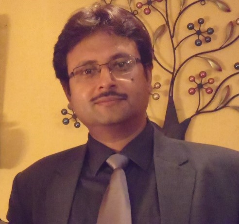

About Us

Dr. Amit Tripathi
Qualifications
- Ph.D., Geology, BHU, India
- M.Sc., Geology, (with specialization in structural geology), BHU, India
Summary
- Dr. Amit has multidisciplinary experience in mineral, nuclear energy exploration, mine planning, processing and geo-statistical approach for total quality control in variety of mineral viz. high valued minerals, base metals and industrial minerals which has made him recognized for his services in mining sector as Member of "The Australasian Institute of Mines and Metals" (AusIMM).
- Dr. Amit's experience spans twenty-six years in research as well as exploration and mining industries in several countries in five continents. He has used his expertise in mineral exploration at USA, Australia, Canada, Colombia, Ecuador, Guyana, India, Madagascar, Mongolia, Nicaragua, Niger, Panama, Senegal, South Africa, Tanzania tic
- Dr. Amit Tripathi is a Doctorate in Structural Geology, started GeoExploration LLC which provide end to end services in the fields of Mining, Mineral Exploration and Mineral Processing.
- Served National Mineral Development Corporation (NDMC), one of the top ten public sector companies of Govt. of India, for seven years in various capacities. He has been project manager on NMDC project in Tanzania and Lesotho and lead the team in Africa to a successful hard rock exploration project. During the stint at NMDC he also completed exploration of diamond bearing kimberlites in South India.
- He has served in senior management and advisory positions and prepared NI43-101 and JORC compliant reports for several listed companies like Goviex Uranium Ltd. (Canada), Sunward Resources Ltd. (Canada), Condoto Platinum Ltd (Australia), Future Vantage (Singapore) Pvt. Ltd., Blue Stream Enterprises Ltd. (BV1) (Subs of Mongolia Energy Corp of Hong Kong).
- Worked on structural correlations of mineralization.
- Developed mathematical model for assessment of gold grades in coarse gold deposits and high nugget effect geological environment.
- Worked extensively in geological mapping and interpretation of structures and sedimentary features in India and abroad.
- Well experienced in software development for geological applications.
- He has authored one book, published about twenty-two scientific research papers in national and international journals.
- Based on the results obtained during research work, M.Sc. and Ph. D. degrees have been awarded and several research articles have been published and submitted for publication in national and international journals. In addition, the results have been presented at several seminars/symposia. The research work is internationally recognized, read, referred and used in conceiving, planning and executing exploration works for gold, diamond and iron ore.
- Several international analysts have reviewed the work and wrote articles about Dr Amit. Some major ones being Ticker Trax (Thom Calandra) and 321Gold (Bob Moriarty).
- Awarded the prestigious Dr K S. Krishnan Fellowship by Dept. of Atomic Energy in 1992.